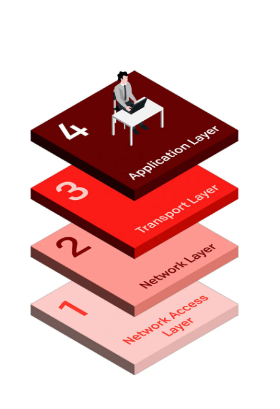

The TCP and IP model, also referred to as the TCP/IP protocol or reference model, is a collection of communication protocols that standardize data exchange in networks. TCP and IP are the two core protocols responsible for data transport across networks.
Transmission Control Protocol (TCP) is a communications standard that enables application programs and computing devices to exchange messages over a network. It is designed to send packets across the internet and ensure the successful delivery of data and messages over networks.
The Internet Protocol (IP) is the method for sending data from one device to another across the internet. Every device has an IP address that uniquely identifies it and enables it to communicate with and exchange data with other devices connected to the internet.
